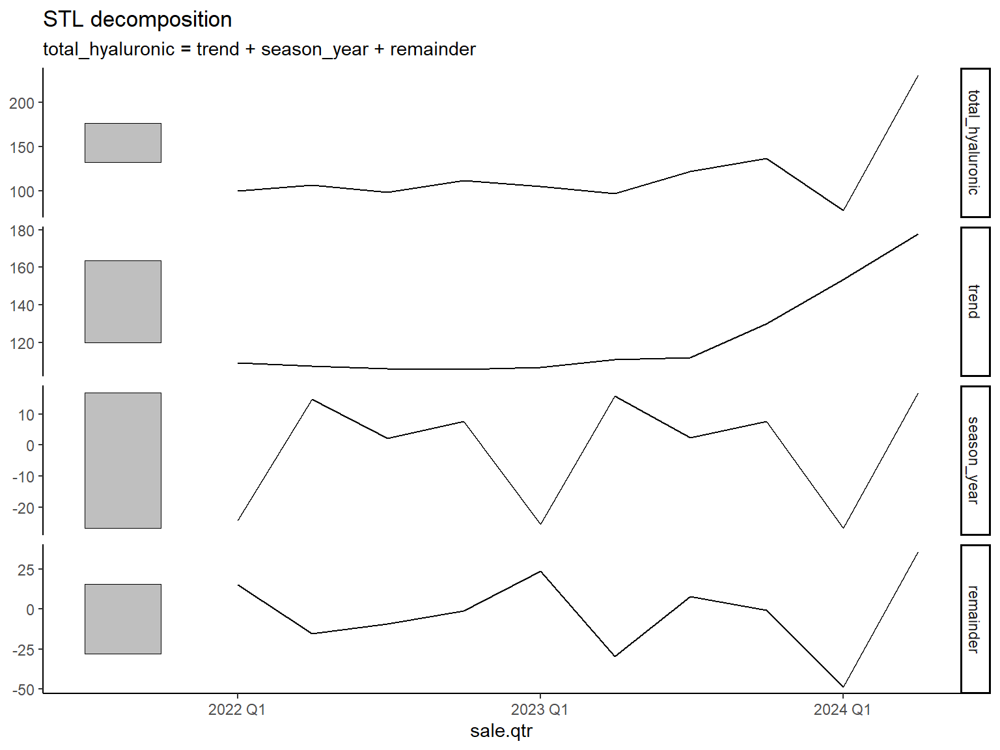
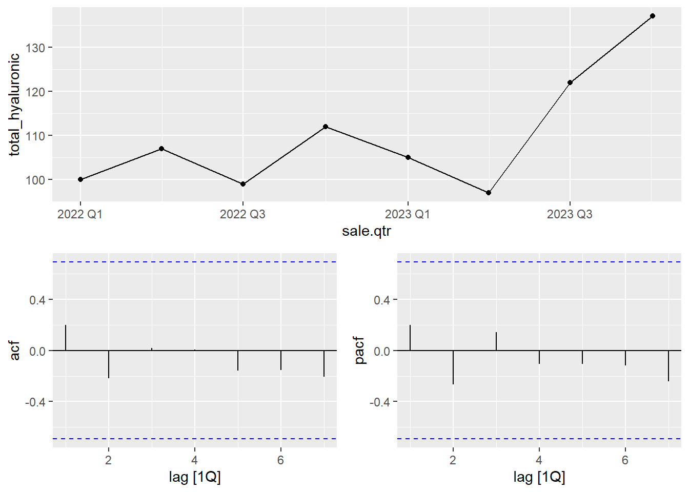
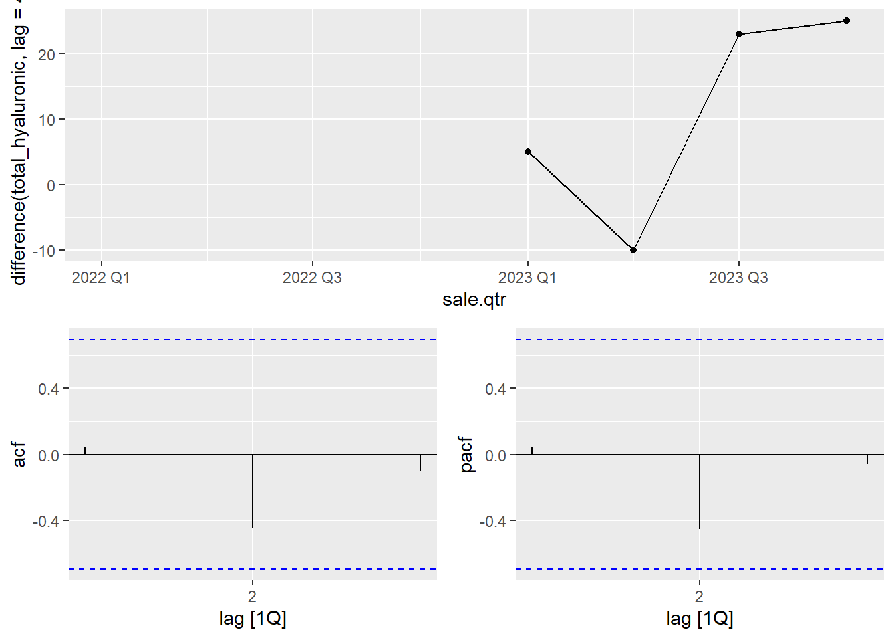

Chapter 2 Data Analysis and Cleaning
2.1 R Setup
I loaded in relevant libraries and imported the sales and promotional datasets.
# Load libraries
library(ggplot2)
library(tidyverse)
library(dplyr)
library(fpp3)
library(fable)
library(fabletools)
library(lubridate)
library(imputeTS)
library(forecast)
library(fable.prophet)
# Read in data
setwd('C:/Users/Mary Grace Stachnik/OneDrive/Desktop/IAA/Skin Laundry')
sales <- read.csv('2022-2024 Clinic Product Sales Data.csv')
promotions <- read.csv('Promotion details and dates.csv')
setwd('C:/Users/Mary Grace Stachnik/OneDrive/Desktop/IAA/Skin Laundry/SkinLaundry_Forecasting')2.2 Data Cleaning
I converted all date columns from character to date types, extracted the Quarter of each observation, and calculated the number of promotional sales days in each quarter.
Assumption: If a promotion spans across 2 months, it is counted in the quarter of the end month.
# Convert sales date column from character to date format and extract Month and Year
sales$sale.date <- as.POSIXct(sales$sale.date, format = "%m/%d/%Y")
sales$sale.month <- yearmonth(sales$sale.date)
sales$sale.qtr <- yearquarter(sales$sale.date)
sales$sale.dummyqtr <- as.factor(quarter(sales$sale.date))
# Convert promotion date columns from character to date format and extract Month and Year
promotions$Start.Date <- as.POSIXct(promotions$Start.Date, format = "%m/%d/%Y")
promotions$End.Date <- as.POSIXct(promotions$End.Date, format = "%m/%d/%Y")
promotions$Start.Month <- yearmonth(promotions$Start.Date)
promotions$End.Month <- yearmonth(promotions$End.Date)
# Calculate the length of each promotion in days.
promotions$promotion.qtr <- yearquarter(promotions$End.Date)
promotions$promotion.days <- round(as.numeric(promotions$End.Date - promotions$Start.Date),0)2.3 Data Aggregations
I aggregated all data to the Quarter/Year level and summed the total sales and total promotional days. I joined the sales and promotional datasets.
Assumption: Sales for Q3 2024 are pre-planned
# Calculate total number of days a promotion is running during each quarter
promotion.agg <- promotions %>% group_by(promotion.qtr) %>%
summarize(promotion.days = sum(promotion.days)) %>%
ungroup()
# Filter to Hyaluronic Acid at Clinic G for Jan 2022 to Sep 2024 and group sales by month
gha <- sales %>% filter(clinic.name=="Clinic G" &
product.name=="Hyaluronic Acid Serum" &
sale.date < as.POSIXct('10/1/2024', format = "%m/%d/%Y")) %>%
group_by(sale.qtr, sale.dummyqtr) %>% summarize(total_hyaluronic = sum(quantity.sold)) %>%
ungroup()## `summarise()` has grouped output by 'sale.qtr'. You can override using the `.groups` argument.# Join promotion details onto dataset
gha <- left_join(gha, promotion.agg, by = c("sale.qtr" = "promotion.qtr"))
gha## # A tibble: 11 × 4
## sale.qtr sale.dummyqtr total_hyaluronic promotion.days
## <qtr> <fct> <int> <dbl>
## 1 2022 Q1 1 100 45
## 2 2022 Q2 2 107 11
## 3 2022 Q3 3 99 28
## 4 2022 Q4 4 112 33
## 5 2023 Q1 1 105 19
## 6 2023 Q2 2 97 3
## 7 2023 Q3 3 122 13
## 8 2023 Q4 4 137 33
## 9 2024 Q1 1 78 20
## 10 2024 Q2 2 231 21
## 11 2024 Q3 3 134 132.4 Time Series Decomposition
I converted the series to a time series object, split into train, validation, and test datasets, and checked that there were no implicit or explicit missing time periods.
I visualized the data using STL time series decomposition. The insights gained from visualization plus manually looking over the dataset include an increasing trend starting in the middle of 2023, seasonal spikes in April and November, and what seems to be an outlier value or the start of a new increased trend in sales in Q2 of 2024.
#Convert series into a tsibble for time series analysis
ha_ts <- as_tsibble(gha, index=sale.qtr)
# Create training, validation, and test datasets
# 2022/2023 as training, Q1/Q2 2024 as validation, Q3 2024 as test
train <- ha_ts[1:8,]
val <- ha_ts[9:10,]
train_val <- dplyr::bind_rows(train,val)
test <- ha_ts[11,]
# Determine if there are implicit or explicit time gaps in data
#count_gaps(ha_ts)
#scan_gaps(ha_ts)
# Perform STL decomposition to visualize training/validation data, as well as trend and seasonal patterns
dcmp <- train_val %>% model(stl = STL(total_hyaluronic))
components(dcmp) %>% autoplot() + theme_classic()
2.5 Differencing
I found that the optimal number of seasonal differences is 1, if using a seasonal ARIMA model. After taking 1 seasonal difference, no other differencing would be needed.
# Determine optimal number of seasonal differences, assuming monthly season
print(train %>% features(total_hyaluronic, unitroot_nsdiffs)) #1## # A tibble: 1 × 1
## nsdiffs
## <int>
## 1 1# Determine if non-seasonal differences are needed after taking the 1st seasonal difference
print(train %>% mutate(ha_diff = difference(total_hyaluronic, lag=4)) %>%
features(ha_diff, unitroot_ndiffs)) #0## # A tibble: 1 × 1
## ndiffs
## <int>
## 1 02.6 ACF and PACF Plots
I found that there are no significant spikes in the ACF and PACF plots. If using an ARIMA model, this would correlate to (p,d,q) terms of (0,0,0).
I found that after taking the first seasonal difference, there are also no significant spikes. If using a SARIMA model, this would correlate to (P,D,Q) terms of (0,1,0).
# Check ACF and PACF with no seasonal differencing
train %>% gg_tsdisplay(total_hyaluronic, plot_type='partial') # No spikes, assume p=0,d=0,q=0
# Check ACF and PACF after taking 1 seasonal difference
train %>% gg_tsdisplay(difference(total_hyaluronic, lag=4),
plot_type='partial',lag=8) # No spikes, assume P=0,D=1,Q=0## Warning: Removed 4 rows containing missing values or values outside the scale range
## (`geom_line()`).## Warning: Removed 4 rows containing missing values or values outside the scale range
## (`geom_point()`).